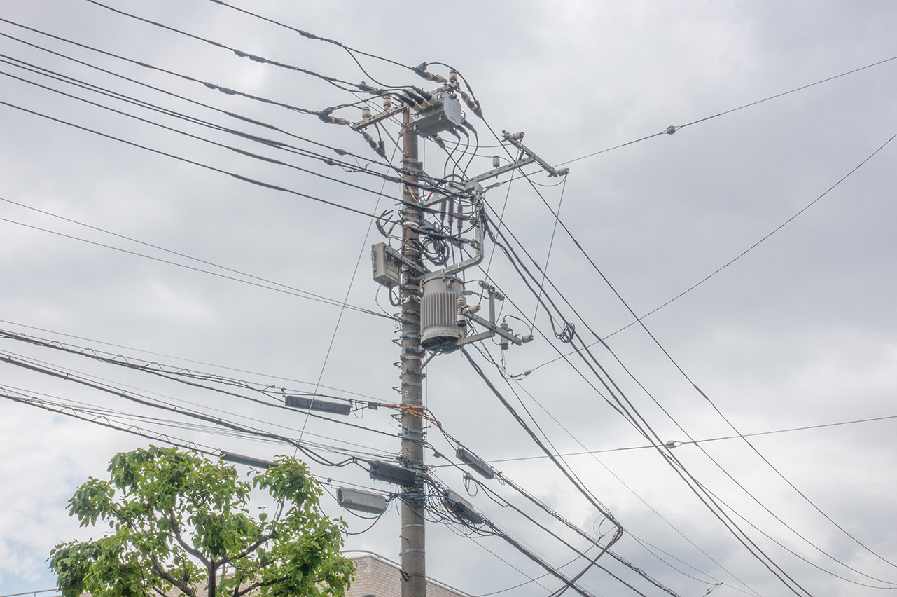

情報連携シビルシステム・コース
情報技術と連携し豊かな社会とくらしの創造に応用する力をつける

まちの基盤施設と人のくらしに情報技術を応用できる人材の育成
私たちのまちは建物、道路、上下水道、電力供給などのインフラに支えられています。 複雑化し高度化するまちの活動を支えるためには、情報システムを応用してこれらのインフラを設計し、活用して いく必要があります。 また、環境への配慮、健康、快適で便利なくらしや、文化やコミュニティに対する情報技術の応用はますます盛んになり、それによって豊かなくらしを創り出すことができます。 シビルシステム・コースでは、まちのインフラと人のくらしへの情報技術応用の基本的な考え方を身につける事ができます。
応用力の養成に力点を置いたカリキュラム
建物やさまざまな施設は、まちの計画の中で、それぞれ個別の目的に応じた設計と管理がなされてきました。 このコースでは、これらの施設の全体の理念、計画、設計、 管理と情報技術の応用を学びます。 また、大きく発展しつつある、くらしへの情報技術の応用についても学びます。 これらの情報技術の応用はその進展が早いため、単に理解し、知識を記憶するのではなく、将来起きるさまざまな社会の変化に追随して柔軟に考え、情報技術を応用できる力を身につけた人材を輩出することをめざします。
卒業後の進路
インフラと情報通信技術を使用して、公共セクターや建設、様々なサービスの開発などに対応できます。